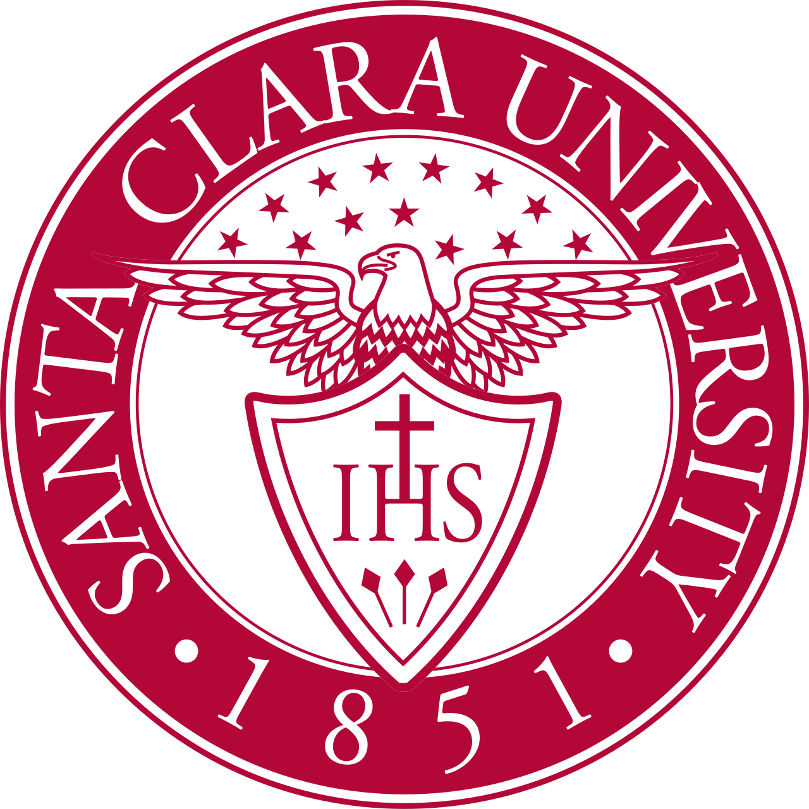
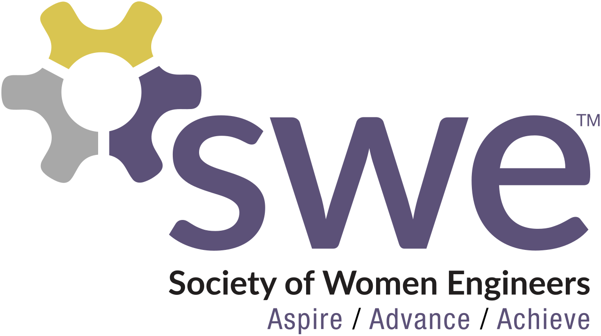
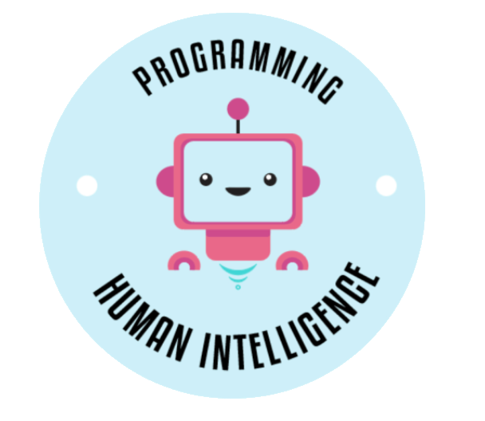

Undergraduate Research Intern
Robotics Systems Lab
07/2023 – 08/2023
Santa Clara University
Santa Clara, California, USA
I modernized a Pioneer mobile robot by replacing its legacy control
electronics with an NVIDIA Jetson platform running the Robot Operating
System (ROS). I Integrated motor controllers and supporting hardware to
create a more programmable foundation for autonomous robotics research.
Acheiving autonomous navigation using LiDAR and camera sensors was the highlight of my internship!
Systems Engineer Intern
Zeda, Inc.
06/2022 – 08/2022
Zeda, Inc.
Fremont, California, USA
Being given a high-priority task of creating a Manufacturing
Execution System for the entire company to use was an honor. The trust
placed in me and the mentorship I recieved was prominant to my success.
I met with Engineers to gather System requirements to automate and unify
production workflows using Excel's VBA. Learning a new programming language
and applying it to a real-world project was empowring and the highlight of my internship.
View Project Poster

SWE++ Chair &
Public Relations Chair
09/2024 – 05/2026
San José State University's Society of Women Engineers Chapter
Initially, I joined Society of Women Engineers to connect with other women in STEM.
I served as a Public Relations Chair and then as a SWE++ Chair,
where I led outreach and communications for the SWE chapter.
I Mentored and taught middle school girls to code in Python. I
was proud to award them with Best Project Certificates at the end of the program.
I also was honored to be awared the SWE++ Chair of the Year!

Community Manager &
Secretary
08/2022 – 08/2024
Artificial Intelligence Club
Ohlone College, Fremont, California, USA
AI Club was my first leadership experience in college.
My professor's encouragement led me to take on the role of Community Manager and Secretary,
where I was responsible for managing the club's social media presence, organizing events,
and maintaining records of meetings and activities.
I had a memoriable time fostering a sense of community amoung club members of all skill levels as I learned alongside them.